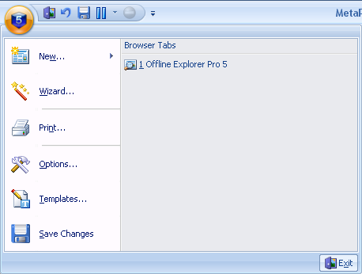

Цель Шаблонов состоит в упрощении создания Проектов. Вы можете создавать любое количество шаблонов с нужными Вам свойствами и выбирать их при создании нового Проекта используя кнопку Проект на основе шаблона (Лента - вкладка Главная).
Создаваемый Проект принимает настройки выбранного Шаблона, которые могут быть в любое время изменены через диалог Свойства Проекта.
Один из Шаблонов называется шаблон по умолчанию. Он будет использоваться в случае, когда новый Проект создаётся перетаскиванием, операцией вставки, с использованием Панели Адреса и в некоторых других случаях.
Для правки списка Шаблонов и их параметров настройки щёлкните по кнопке приложения и выберите Шаблоны.
